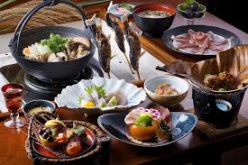

Cusines around the world
A cuisine represents a distinct style of cooking practices and traditions, often closely tied to a specific region, culture, or country, characterized by unique ingredients, cooking techniques, and dishes that reflect the local environment and history.
Indian Cusines
American Cuisines
European Cusines
Japanese Food
Indian cuisine is known for its use of spices, vegetables, fruits, and grains, and is one of the most diverse cuisines in the world.

American cuisine is a diverse collection of dishes and cooking styles that originated in the United States. It's influenced by many cultures and traditions, including Native American, European, and immigrant groups.

Japanese cuisine encompasses the regional and traditional foods of Japan, which have developed through centuries of political, economic, and social changes. The traditional cuisine of Japan (Japanese: washoku) is based on rice with miso soup and other dishes with an emphasis on seasonal ingredients.
